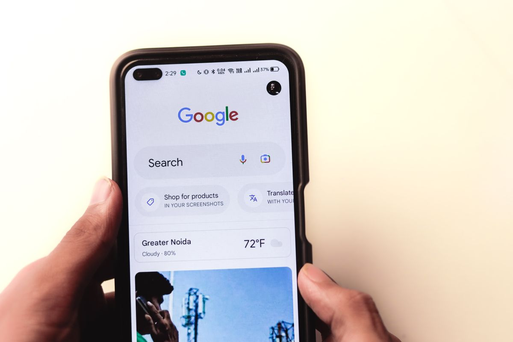
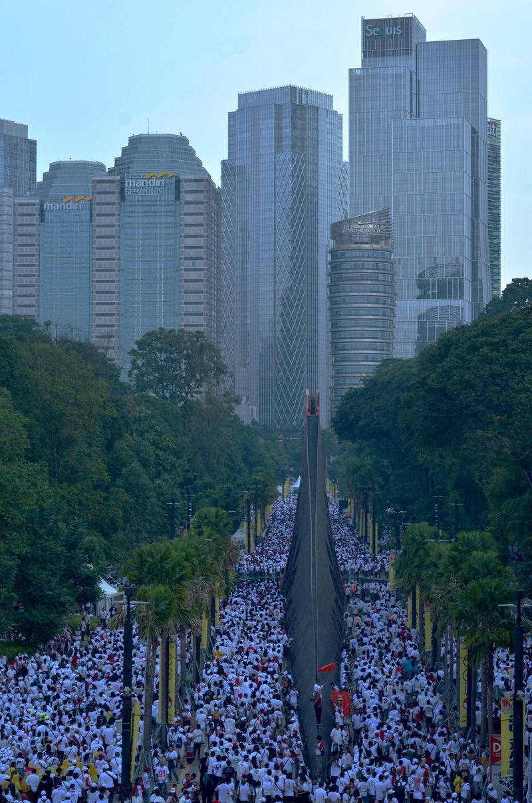

Kalau kamu buka Google dalam beberapa hari terakhir dan melihat nama Raffi Ahmad bertengger di pencarian teratas Indonesia, kamu tidak sendiri. Selasa, 3 November 2026, nama artis sekaligus Utusan Khusus Presiden Bidang Pembinaan Generasi Muda dan Pekerja Seni itu menjadi salah satu kueri paling dicari, dengan lonjakan yang masuk kategori Breakout di Google Trends. Artikel ini merangkum kronologinya dari liputan media, supaya kamu paham duduk perkaranya tanpa ikut menyebar kabar setengah matang.

Lonjakan Pencarian yang Terukur, Bukan Sekadar Ramai di Timeline
Data Google Trends menunjukkan pencarian nama Raffi Ahmad naik hingga lebih dari 5.000 persen dibandingkan pekan sebelumnya, angka yang dikutip Detik iNET dan membuat kueri ini masuk kategori Breakout, sebutan untuk pencarian yang tumbuh sangat cepat dalam waktu singkat.
Wilayah dengan pencarian tertinggi adalah Daerah Istimewa Yogyakarta, disusul Jakarta, Banten, Jawa Tengah, dan Kalimantan Timur dalam 24 jam terakhir. Frasa yang paling banyak dipakai antara lain "Raffi Ahmad kenapa", "kenapa Raffi Ahmad", dan "Raffi Ahmad kasus". Pertanyaan "kenapa Raffi Ahmad diboikot" juga masuk kategori Breakout, sementara nama Caca Tengker, kakak kandung Nagita Slavina, ikut muncul di daftar pencarian terkait.
Angka-angka itu menjawab satu hal penting. Banyak orang benar-benar tidak tahu apa yang terjadi, dan mereka mencari jawabannya di Google. Nah, di sinilah risiko hoaks muncul. Kita bedah kronologinya.
Kronologi: dari Panggung Deklarasi 29 Oktober sampai Permintaan Maaf
Semuanya bermula Kamis, 29 Oktober 2026. Hari itu digelar Deklarasi Sumpah Pemuda Mahasiswa Indonesia 2026 di depan Pos Polisi Thamrin, Jakarta Pusat, kawasan Bundaran HI. Acara ini diselenggarakan oleh Polda Metro Jaya.
Raffi Ahmad hadir di acara itu bersama kreator konten Willie Salim. Kehadiran dua figur publik ini kemudian menimbulkan kegaduhan di media sosial, karena sebagian publik mempertanyakan kenapa mereka ada di acara yang mengatasnamakan mahasiswa.
Kegaduhan itu yang memicu lonjakan pencarian. Orang-orang mengetik "Raffi Ahmad kenapa" karena potongan video dan tangkapan layar acaranya menyebar tanpa konteks yang utuh.
Pada akhir pekan lalu, Raffi akhirnya buka suara lewat pernyataan resmi di media sosial pribadinya. Poin-poin klarifikasinya begini.
Pertama, ia menegaskan hadir sebagai undangan dalam kegiatan kepemudaan tersebut, bukan sebagai inisiator. Informasi soal acara itu baru ia terima pada malam sebelum acara berlangsung.
Kedua, ia membantah terlibat dalam perencanaan, pengerahan massa, maupun penyusunan teknis acara. Ia juga membantah mengatur kemunculan pembatas jalan atau atribut merek tertentu di lokasi.
Ketiga, ia menegaskan tidak punya niat merendahkan atau mencederai semangat perjuangan generasi muda, dan ia tetap menghormati aspirasi mahasiswa yang menggelar aksi pada momentum Hari Sumpah Pemuda, 28 Oktober 2026.
Keempat, ia meminta maaf atas kegaduhan yang timbul dari kehadirannya, dan menyebut peristiwa itu sebagai bahan evaluasi agar lebih teliti memahami informasi sebelum menerima undangan kegiatan.

Polda Metro Jaya Juga Buka Suara
Kepala Bidang Humas Polda Metro Jaya, Kombes Pol Budi Hermanto, membenarkan penjelasan Raffi. Menurutnya, Raffi Ahmad dan Willie Salim datang karena menerima undangan dari kepolisian selaku penyelenggara acara, dengan niat baik ikut memaknai peringatan Sumpah Pemuda.
Budi juga menyampaikan permohonan maaf Polda Metro Jaya atas dinamika yang muncul, dan menyatakan institusinya siap menerima seluruh kritik publik sebagai bahan evaluasi kegiatan ke depannya.
Dengan begitu, dua sumber utama kejadian, Raffi sendiri dan penyelenggara acara, memberi keterangan yang sejalan. Kehadiran itu berstatus undangan resmi, bukan deklarasi dukungan terhadap hal lain di luar acara tersebut.
Jadi, Benarkah Ada "Kasus"?
Ini bagian yang paling penting. Frasa "Raffi Ahmad kasus" memang termasuk pencarian teratas, tapi sampai artikel ini ditulis tidak ada keterangan resmi soal kasus hukum apa pun. Yang ada adalah polemik soal kepantasan kehadirannya di acara itu, yang sudah dijawab dengan klarifikasi dan permintaan maaf.
Begitu juga dengan isu boikot. Pertanyaan "kenapa Raffi Ahmad diboikot" memang melonjak, tapi tidak ada pernyataan resmi dari pihak mana pun soal pemboikotan. Istilah itu lebih menggambarkan nada protes sebagian netizen ketimbang sebuah fakta yang sudah terjadi.
Cara Membaca Kabar Viral Tanpa Ikut Terpancing
Kabar seperti ini biasanya bergerak dengan pola yang sama. Potongan video menyebar, caption provokatif ditambahkan, lalu orang mencari di Google dengan kata kunci yang juga provokatif, misalnya "Raffi Ahmad kasus". Hasil pencariannya justru bisa makin memperkuat asumsi yang belum tentu benar.
Supaya tidak jadi bagian dari rantai itu, lakukan tiga hal sederhana. Pertama, cek sumber primernya langsung, dalam hal ini pernyataan resmi Raffi dan keterangan Polda Metro Jaya, bukan tangkapan layar yang beredar. Kedua, bedakan antara fakta dan nada protes netizen, karena keduanya sering tercampur di timeline. Ketiga, kalau masih ragu, tunggu satu sampai dua hari sampai klarifikasi resmi keluar sebelum ikut berkomentar atau meneruskan.
Singkatnya, nama Raffi Ahmad trending karena publik mencari penjelasan soal kehadirannya di Deklarasi Sumpah Pemuda Mahasiswa Indonesia 2026 pada 29 Oktober 2026, dan ia sudah menjawabnya dengan klarifikasi plus permintaan maaf. Klarifikasi itu dikonfirmasi penyelenggara acara. Di luar itu, sisanya adalah spekulasi netizen yang belum tentu berdasar. Kamu sekarang sudah tahu versi lengkapnya, jadi tidak perlu ikut menyebarkan yang setengah-setengah. (per November 2026)
Sumber dan Info Resmi
Angka dan detail kronologi di artikel ini merujuk ke sumber berikut, yang sudah diverifikasi isinya:
- LensaHukum: Pencarian Raffi Ahmad Melonjak hingga 5.000 Persen di Google (1 November 2026): lonjakan pencarian +5.000 persen kategori Breakout, wilayah pencarian tertinggi, daftar kueri teratas, dan latar acara deklarasi 29 Oktober 2026.
- Faktual Indonesia: Pencarian Nama Raffi Ahmad Melonjak 5.000 Persen di Google, Publik Pertanyakan Isu Boikot (1 November 2026): konfirmasi data Google Trends, klarifikasi Raffi lewat video di media sosial, dan keterangan Kabid Humas Polda Metro Jaya.
- Beritakota: Raffi Ahmad Minta Maaf soal Deklarasi Sumpah Pemuda (1 November 2026): klarifikasi Raffi lewat akun Instagram pribadinya, hadir sebagai undangan, tidak berniat merendahkan semangat perjuangan generasi muda, dan permintaan maaf.
- LensaHukum: Raffi Ahmad Minta Maaf Usai Hadiri Deklarasi Sumpah Pemuda (1 November 2026): klarifikasi Raffi yang dilansir Detik Hot plus konfirmasi Kombes Pol Budi Hermanto bahwa Raffi dan Willie Salim hadir atas undangan kepolisian; Polda Metro Jaya minta maaf dan menerima kritik.
- WiraNews: Polda Metro Minta Maaf soal Deklarasi Sumpah Pemuda (31 Oktober 2026): detail klarifikasi Raffi, info acara baru diterima malam sebelumnya, bantahan terlibat perencanaan dan pengerahan massa, bantahan mengatur pembatas jalan dan atribut, serta penghormatan aspirasi mahasiswa 28 Oktober.